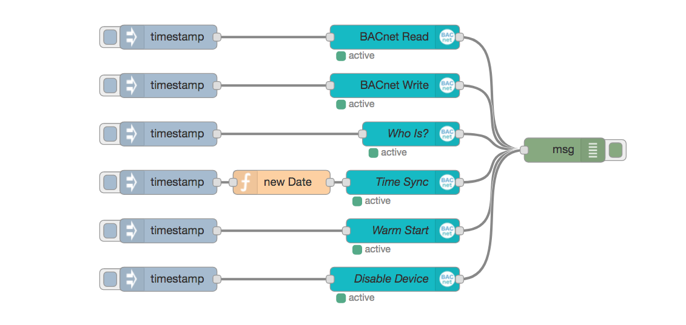

node-red-contrib-bacnet
Building Automation and Control Networks Protocol toolbox for Node-RED.
International IIoT Website for Node-RED
For an international area, Iniationware has provided the PLUS for Node-RED International website.
IIoT Webseite Deutschland für Node-RED
Für einen deutschsprachigen Bereich hat Iniationware die Webseite PLUS for Node-RED Germany bereitgestellt.
Install
Run command on Node-RED installation directory.
npm install node-red-contrib-bacnet
or run command for global installation.
npm install -g node-red-contrib-bacnet
try these options on npm install to build, if you have problems to install
--unsafe-perm --build-from-source

License
The MIT License with support via Subscription bundle or GitHub Sponsoring Klaus Landsdorf and Community driven work
Important
This is not an official product of the BACnet Advocacy Group. It is just to provide BACnet to Node-RED based on node-bacstack package. BACnet® is a registered trademark of American Society of Heating, Refrigerating and Air-Conditioning Engineers (ASHRAE).
Contribution NodeJS BACnet® Library
I'd like to give special thanks to fh1ch and Apollon77 for their work on the NodeJS-BACnet-Library.